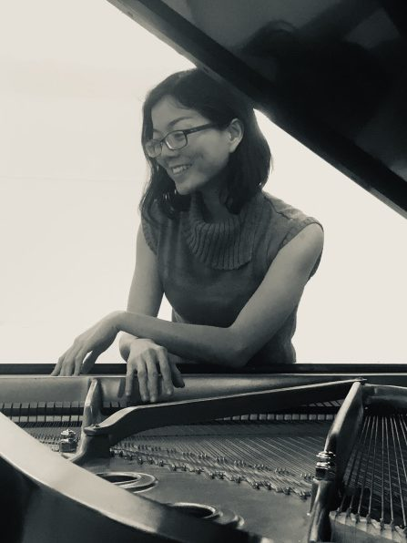

Phan Gia Anh-Thư
Music educator · pianist · author nhà giáo âm nhạc · nghệ sĩ dương cầm · tác giả
Anh-Thư holds degrees in Music Education from Columbia University, Folk Music Studies from Temple University, and Piano Performance from the National University of Singapore. With more than a decade of teaching and three decades of performance behind her, her work centers on helping students understand their own cultural musical traditions from the inside out, with a special focus on the distinctive character of Vietnamese music. She authored the academy's Educational Music Processor, the first universal learner-centric online music education and analysis system.
Anh-Thư tốt nghiệp ngành Sư phạm Âm nhạc tại Đại học Columbia, Dân nhạc học tại Đại học Temple, và Biểu diễn Dương cầm tại Đại học Quốc gia Singapore. Hơn mười năm giảng dạy và ba mươi năm biểu diễn, chị tập trung giúp học viên hiểu truyền thống âm nhạc của chính mình từ bên trong, đặc biệt là nét riêng của âm nhạc Việt Nam. Chị là tác giả của Educational Music Processor — hệ thống học và phân tích âm nhạc trực tuyến lấy người học làm trung tâm đầu tiên trên thế giới.
Full CV at anhthuphan.com Tiểu sử đầy đủ tại anhthuphan.com